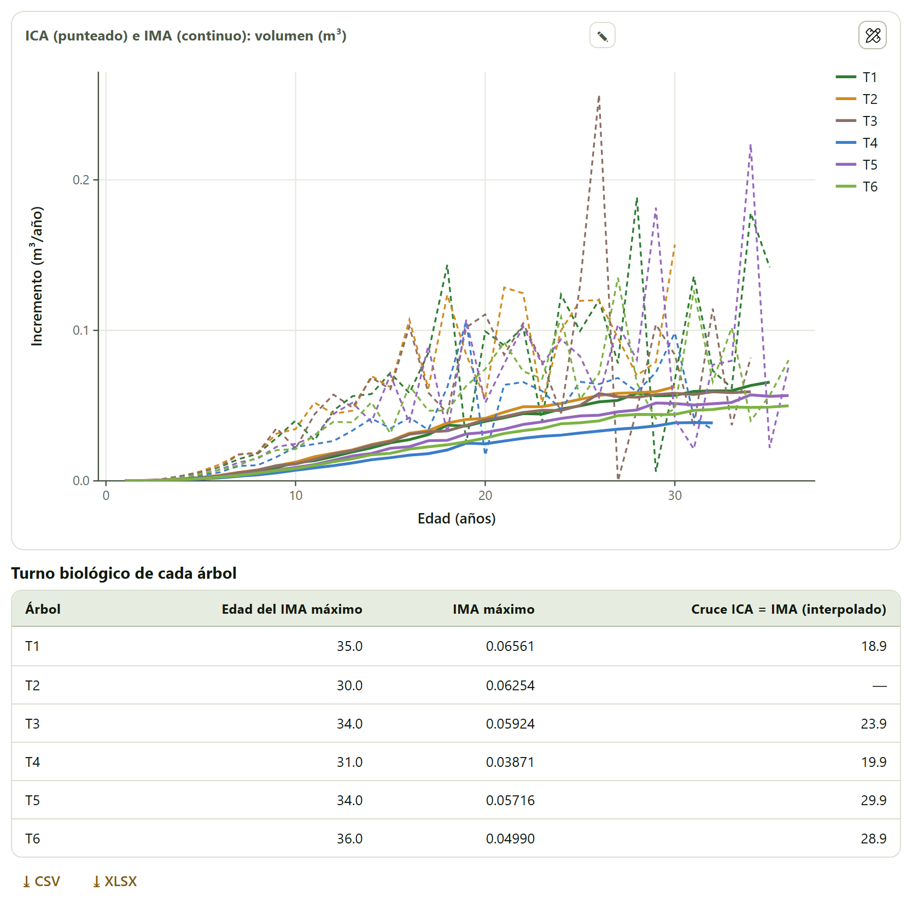
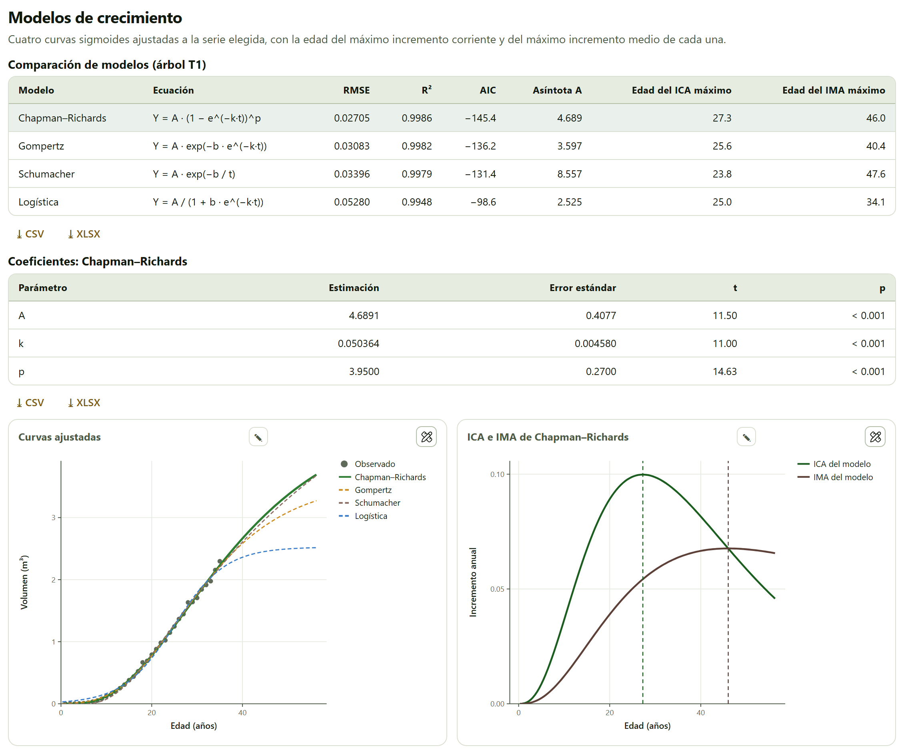
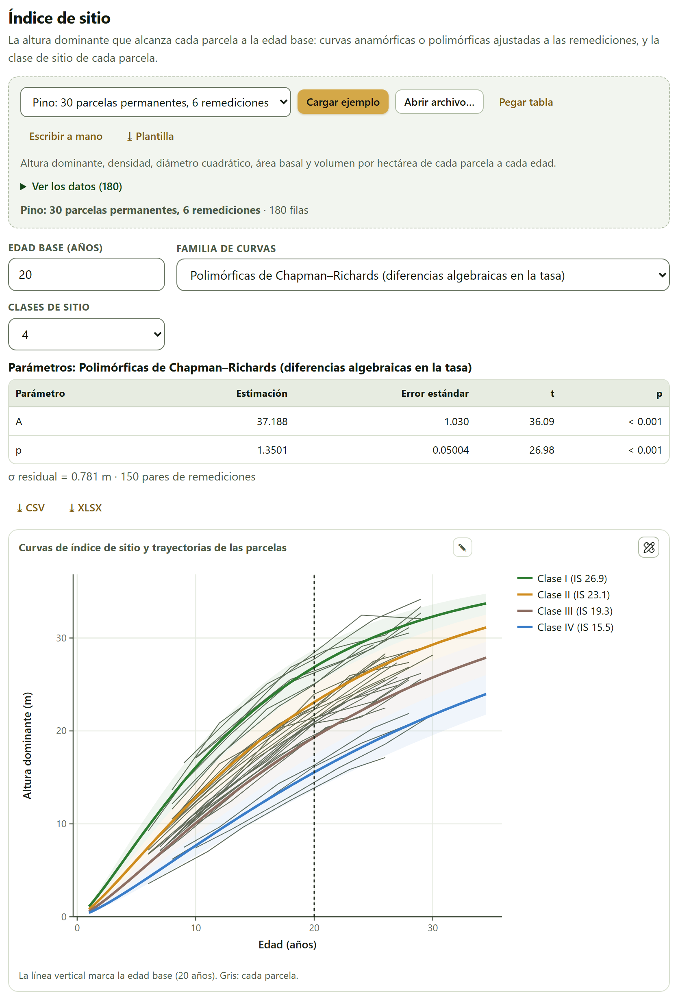
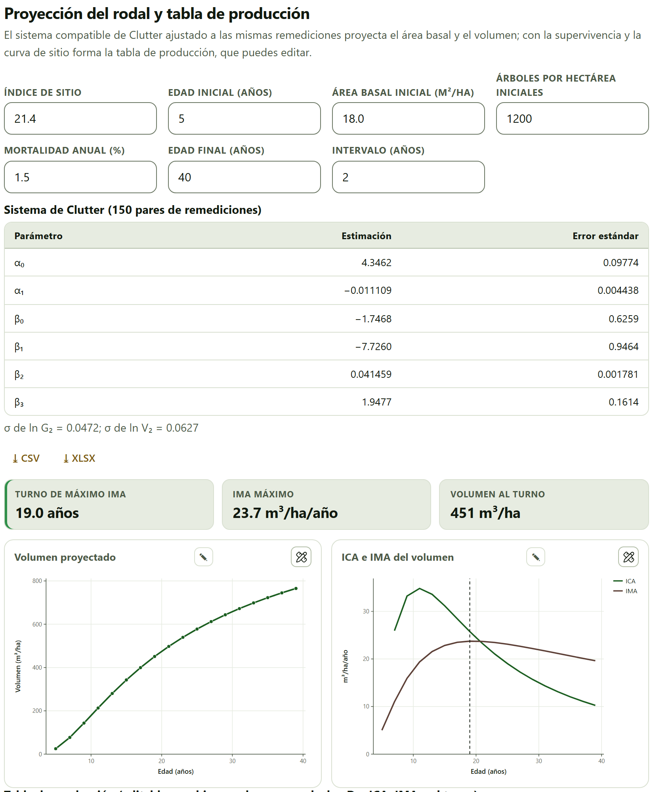
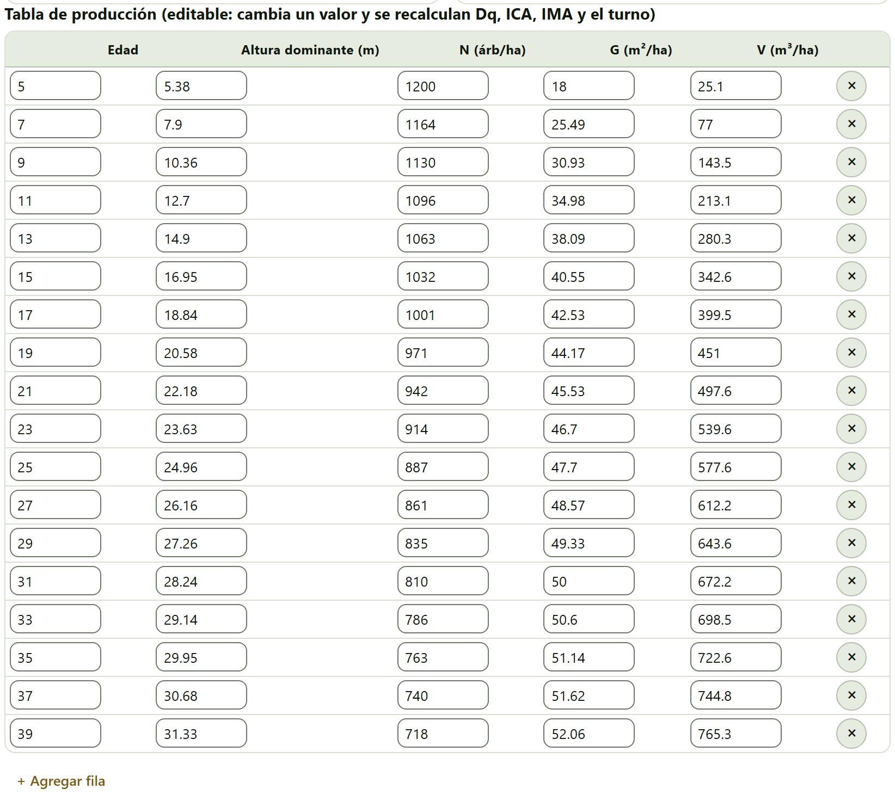

Del anillo al turno: cuánto crece un árbol cada año y en promedio, qué curva describe su crecimiento, qué tan bueno es el sitio de cada parcela y cuánto volumen dará el rodal a cada edad. Con el análisis troncal de unos cuantos árboles y las remediciones de parcelas permanentes, el bloque llega a la tabla de producción y al turno de máxima producción.
El Bloque 5 lleva por subtítulo «Incrementos corriente y medio, modelos de crecimiento, índice de sitio y proyección del rodal.» Tiene dos tarjetas de datos: la del árbol (sección 5.1), que alimenta también los modelos de la sección 5.2, y la de las parcelas remedidas (sección 5.3), que alimenta también la proyección de la sección 5.4. No depende del inventario del Bloque 3.
El ejemplo de todo el capítulo es la plantación de pino de ejemplo, que se abre con Abrir en Crecimiento en su tarjeta de Bloque 1›Datos de ejemplo: el análisis troncal de seis árboles y treinta parcelas permanentes medidas seis veces (sección I.7). Son datos simulados.
«Con el análisis troncal o las remediciones de un árbol: el incremento corriente anual (ICA), el medio anual (IMA) y la edad en que el IMA es máximo.» Es la cuenta más antigua de la dasometría, y sigue siendo la que decide cuándo conviene cortar.
La tarjeta de datos pide Árbol o serie* y Edad (años)*, y al menos una de las variables Diámetro (cm), Altura (m) y Volumen (m³). Una «serie» puede ser un árbol reconstruido por análisis troncal —sus anillos dan el diámetro y la altura a cada edad— o un árbol medido varias veces. El ejemplo Pino: análisis troncal de 6 árboles trae 203 filas: los árboles T1 a T6, con series de 30 a 36 años. Debajo de la tarjeta hay tres controles:
El incremento corriente anual entre dos mediciones es lo que creció la variable entre ellas, dividido entre los años: ICA = (Y₂ − Y₁)/(t₂ − t₁). El incremento medio anual es lo acumulado dividido entre la edad: IMA = Y/t. Al principio el árbol crece cada vez más rápido y el ICA supera al IMA, que sube; cuando el ICA cae por debajo del IMA, el IMA empieza a bajar. El máximo del IMA está, pues, donde las dos curvas se cruzan. En volumen, esa edad es el turno biológico o de máxima producción: cortar entonces da el mayor volumen medio por año. El turno económico, que descuenta el dinero en el tiempo (Bloque 9), suele ser más corto (Assmann 1970; Davis et al. 2001).

La figura ICA (punteado) e IMA (continuo): volumen (m³) dibuja las dos curvas de todos los árboles, un color por árbol. Debajo, la tabla Turno biológico de cada árbol da la Edad del IMA máximo, el IMA máximo y el Cruce ICA = IMA (interpolado), y la tabla Serie del árbol T1 (o del árbol elegido) da año por año la variable, el ICA y el IMA. En el pino de ejemplo, el árbol T1 llega a 2.2965 m³ a los 35 años, con un IMA de 0.06561 m³/año.
La interpretación da la edad media del IMA máximo, 33.3 años en el ejemplo, y advierte: «En 4 árboles el IMA aún crece en la última edad medida: su turno es posterior a la serie.» Son T1, T2, T3 y T6, cuyo máximo cae justo en su última edad; para ellos, la edad de la tabla es sólo un límite inferior del turno.
El ICA año por año de un análisis troncal sube y baja mucho, porque un anillo ancho o angosto lo mueve. La columna del cruce da el primer punto en que el ICA baja del IMA, aunque después vuelva a subir: en T1 marca 18.9 años, mientras que su IMA sigue creciendo hasta los 35. Para el turno, fíate de la Edad del IMA máximo y, mejor aún, de la curva ajustada de la sección 5.2, que no tiene ese ruido.
«Cuatro curvas sigmoides ajustadas a la serie elegida, con la edad del máximo incremento corriente y del máximo incremento medio de cada una.» Una curva ajustada suaviza el ruido de los anillos y deja calcular el turno aunque la serie no haya llegado a él.
La tarjeta no tiene controles propios: ajusta la serie del Árbol para los modelos en la Variable elegidas en la sección 5.1, y se rehace al cambiarlas. Necesita al menos cinco edades («Hacen falta al menos 5 edades.»). Los cuatro modelos, con A como asíntota —el tamaño máximo que el modelo atribuye al árbol—, son:
| Modelo | Ecuación | Rasgo |
|---|---|---|
| Chapman–Richards | Y = A (1 − e−kt)p | El más flexible: p mueve el punto de inflexión (Richards 1959) |
| Gompertz | Y = A exp(−b e−kt) | Inflexión fija en A/e; no pasa por el origen (Gompertz 1825) |
| Schumacher | Y = A exp(−b/t) | Dos parámetros; clásico en rendimiento forestal (Schumacher 1939) |
| Logística | Y = A/(1 + b e−kt) | Simétrica, inflexión en A/2; no pasa por el origen |
Cada modelo se ajusta por mínimos cuadrados no lineales desde varios puntos de arranque. La tabla Comparación de modelos (árbol T1) da para cada uno su Ecuación, el RMSE, el R², el AIC, la Asíntota A, la Edad del ICA máximo —el punto de inflexión, donde la curva crece más rápido— y la Edad del IMA máximo; el renglón sombreado es el de menor AIC, el criterio que la app usa para elegir. Gompertz y la logística no pasan por el origen, así que su IMA máximo se busca sólo desde la menor edad observada; si el máximo cae en un extremo del intervalo de búsqueda, la columna dice «— (en el borde)».

Debajo, Coeficientes: Chapman–Richards (o del modelo ganador) da cada parámetro con su error estándar, su t y su p: para T1, A = 4.6891, k = 0.050364 y p = 3.9500. La figura Curvas ajustadas muestra los datos observados y las cuatro curvas, prolongadas más allá de la última edad; la de la derecha, el ICA y el IMA del modelo ganador, que se cruzan justo en la edad del IMA máximo.
La interpretación lo resume: «Chapman–Richards es el de menor AIC. Según él, el incremento corriente es máximo a los 27.3 años y el medio a los 46.0 años.» Ese turno de 46 años está más allá de los 35 años medidos: lo pone la curva, no los datos. Por eso la app añade que la asíntota (4.689 m³) «es una extrapolación: vale como orden de magnitud, no como dato». Los cuatro modelos ajustan casi igual dentro de los datos (R² de 0.9948 a 0.9986) y se separan después: la edad del IMA máximo va de 34.1 años con la logística a 47.6 con Schumacher.
«La altura dominante que alcanza cada parcela a la edad base: curvas anamórficas o polimórficas ajustadas a las remediciones, y la clase de sitio de cada parcela.» La altura dominante casi no depende de la densidad del rodal ni de los aclareos, y por eso es la medida usual de la calidad de sitio.
La tarjeta de datos pide Parcela*, Edad (años)* y Altura dominante (m)*, una fila por parcela y medición. Las columnas Área basal (m²/ha), Volumen (m³/ha) y Árboles por hectárea son opcionales aquí, pero la proyección de la sección 5.4 necesita las dos primeras. El ejemplo Pino: 30 parcelas permanentes, 6 remediciones trae 180 filas, con edades de 5 a 30 años. Los controles:
En una familia anamórfica todas las curvas tienen la forma de una curva guía y sólo cambian de escala: el índice de una medición es su altura reescalada a la edad base. En una polimórfica, la forma también cambia con el sitio. La app usa diferencias algebraicas (Bailey y Clutter 1974; Cieszewski y Bailey 2000): una Chapman–Richards con A y p comunes y una tasa k propia de cada sitio, ajustada a los pares de mediciones sucesivas con H₂ = A[1 − (1 − (H₁/A)1/p)t₂/t₁]p. Necesita remediciones de las mismas parcelas.

El índice de una parcela es la media de los índices de sus mediciones. La tabla Clases de sitio divide el intervalo de índices en partes iguales —la clase I es la mejor— con sus límites IS desde (m) e IS hasta (m) y las Parcelas de cada una: en el ejemplo, la clase I va de 25.0 a 28.8 m con 7 parcelas; la II, de 21.2 a 25.0 m con 8; la III, de 17.4 a 21.2 m con 11, y la IV, de 13.7 a 17.4 m con 4. Índice de sitio de cada parcela da para cada parcela su IS a 20 años (m), la DE entre mediciones, las Mediciones y su Clase; la parcela R01, por ejemplo, tiene IS = 19.68 m (clase III).
La DE entre mediciones es la prueba de que la familia de curvas sirve: si una parcela crece como dice su curva, todas sus mediciones dan el mismo índice. La interpretación da la media de esa desviación y la juzga: por debajo de 0.6 m, «las curvas siguen bien la forma en que crecen las parcelas»; por encima, la app sugiere probar otra familia.
Con el pino de ejemplo y la edad base de 20 años, la desviación media del índice entre las mediciones de una parcela es de 0.55 m con la familia polimórfica, 1.00 m con la anamórfica de Chapman–Richards y 1.62 m con la de Schumacher. Sólo la polimórfica pasa el umbral; en las otras dos la app dice que la desviación es «grande» y propone las polimórficas, que «suelen seguir mejor sitios que crecen a ritmos distintos». Los índices van de 13.7 a 28.8 m con la polimórfica, de 13.0 a 29.3 m con la anamórfica de Chapman–Richards y de 13.1 a 29.1 m con la de Schumacher.
«El sistema compatible de Clutter ajustado a las mismas remediciones proyecta el área basal y el volumen; con la supervivencia y la curva de sitio forma la tabla de producción, que puedes editar.» Es el paso del árbol al rodal: cuánto volumen habrá por hectárea a cada edad, y cuándo se alcanza el máximo incremento medio.
La tarjeta usa las remediciones de la sección 5.3, con su área basal y su volumen por hectárea, y el índice de sitio de cada parcela. Si faltan, lo dice: «La proyección necesita el área basal y el volumen por hectárea de las remediciones y el índice de sitio de cada parcela.» Hacen falta al menos 6 pares de remediciones.
Clutter (1963) propuso dos ecuaciones compatibles: el crecimiento, integrado, da el rendimiento. El área basal futura sale de la actual: ln G₂ = ln G₁·(t₁/t₂) + α₀(1 − t₁/t₂) + α₁(1 − t₁/t₂)·S. El volumen, del área basal, la edad y el sitio: ln V₂ = β₀ + β₁/t₂ + β₂·S + β₃·ln G₂. La app los ajusta a los pares de remediciones sucesivas como suele aplicarse: la primera sin intercepto y con el coeficiente de ln G₁·t₁/t₂ fijo en 1, por mínimos cuadrados; la segunda por mínimos cuadrados en dos etapas (Theil 1953), con ln G₂ sustituido por su proyección sobre las variables exógenas. S es el índice de sitio de cada parcela de la sección 5.3.
Los siete campos de la proyección son Índice de sitio, Edad inicial (años), Área basal inicial (m²/ha), Árboles por hectárea iniciales, Mortalidad anual (%), Edad final (años) e Intervalo (años). La app propone los primeros con los datos: como índice, la mediana de los índices de las parcelas (21.4 m en el ejemplo); como edad inicial, la menor edad medida (5 años), y como área basal inicial, la media de las parcelas más jóvenes (18.0 m²/ha). Los demás traen 1200 árboles por hectárea, 1.5 % de mortalidad anual, 40 años de edad final y un intervalo de 2 años. Cámbialos para proyectar el rodal que te interesa: cada cambio rehace la tabla.

La tabla Sistema de Clutter (150 pares de remediciones) da los seis coeficientes con su error estándar —en el ejemplo, α₀ = 4.3462 y β₃ = 1.9477— y, debajo, el error residual de cada ecuación (σ de ln G₂ = 0.0472; σ de ln V₂ = 0.0627). Los mosaicos dan el Turno de máximo IMA, con borde verde, o ámbar y la nota «el IMA aún crece al final de la tabla» si el máximo no se alcanza antes de la edad final; el IMA máximo, y el Volumen al turno. Las figuras Volumen proyectado e ICA e IMA del volumen muestran la tabla en curvas.
La tabla se presenta dos veces. La primera es editable: Edad, Altura dominante (m), N (árb/ha), G (m²/ha) y V (m³/ha). Su título lo explica: «cambia un valor y se recalculan Dq, ICA, IMA y el turno». Sirve para corregir la proyección con lo que sabes —un aclareo que baja N y G a cierta edad, un volumen medido— o para quitar con × las edades que no quieres; + Agregar fila agrega una edad. La segunda, Tabla de producción completa, añade el diámetro cuadrático medio Dq (cm), el ICA (m³/ha/año) y el IMA (m³/ha/año), con el renglón del turno sombreado, y es la que se descarga.

Cada columna sale de una pieza distinta: la altura dominante, de la curva de sitio de la sección 5.3 con el índice elegido; N, de la supervivencia a tasa anual constante, N = N₀(1 − m)t − t₀; G y V, del sistema de Clutter, y Dq = √(40 000·G/(π·N)). En el ejemplo, el IMA llega a 23.74 m³/ha/año a los 19 años y baja a 23.69 a los 21: el máximo es plano, y unos años antes o después del turno el rendimiento medio apenas cambia. La interpretación lo dice así: «Con índice de sitio 21.4 m, el volumen medio anual es máximo a los 19.0 años (23.7 m³/ha/año). El sistema se ajustó con parcelas de 5.0 a 30.0 años: más allá, la tabla es extrapolación.»
La app vuelve a ajustar el sistema de Clutter cada vez que cambias la edad base, la familia de curvas o el número de clases de la sección 5.3, y en ese momento devuelve la Edad inicial (años) a la menor edad medida, aunque la hubieras cambiado. El Índice de sitio, en cambio, conserva su valor: si cambias la edad base de 20 a 25 años, sigue en 21.4, que era un índice a los 20 años. Después de tocar la sección 5.3, vuelve a escribir en la proyección la edad inicial y un índice expresado a la nueva edad base. Observa también que la tabla avanza desde la edad inicial con el intervalo elegido y no siempre llega a la edad final: con 5, 40 y 2 años, termina a los 39.
| Si el IMA de un árbol es máximo en su última edad medida | entonces el turno es posterior a la serie: usa la curva ajustada y tómalo como estimación. |
| Si la edad del IMA máximo de la curva cae muy lejos de los datos | entonces es extrapolación: compárala entre modelos antes de usarla. |
| Si la DE del índice entre mediciones pasa de 0.6 m | entonces prueba otra familia de curvas; con remediciones, las polimórficas. |
| Si el turno de la tabla cae fuera de las edades con que se ajustó el sistema | entonces la tabla es extrapolación: tómala con cautela. |
| Si el mosaico del turno sale en ámbar | entonces sube la edad final: el IMA todavía crece al final de la tabla. |
Guías para interpretar, no leyes.
«Hacen falta al menos 5 edades.» El árbol elegido para los modelos tiene una serie demasiado corta: elige otro o cambia de variable si en ésa faltan datos.
«No se pudo ajustar la familia de curvas…». Las polimórficas necesitan remediciones de las mismas parcelas; con una sola medición por parcela, usa una anamórfica.
La proyección no aparece. Faltan el área basal o el volumen por hectárea en las remediciones, el índice de sitio no se pudo calcular o hay menos de 6 pares de remediciones.